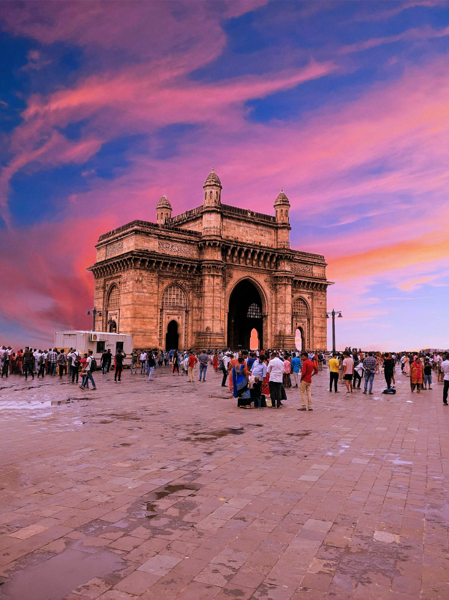

Iran & Middle East Nonproliferation

Preventing a nuclear-armed Iran and forestalling a regional arms race in the Middle East remains a top-tier U.S. national security priority. Military confrontation would carry catastrophic costs for regional civilians and global energy markets; multilateral diplomacy backed by robust deterrence offers the only verifiable path toward durable stability.
An effective strategy requires restoring International Atomic Energy Agency (IAEA) monitoring access, capping uranium enrichment, and addressing destabilizing ballistic missile proliferation and proxy violence. Simultaneously, the United States must support the fundamental aspirations of the Iranian people for freedom, human rights, and economic dignity.
We advocate for realistic, high-level diplomatic off-ramps that eliminate Iran's breakout capability while strengthening cooperative regional air and maritime defenses among our Middle Eastern allies.